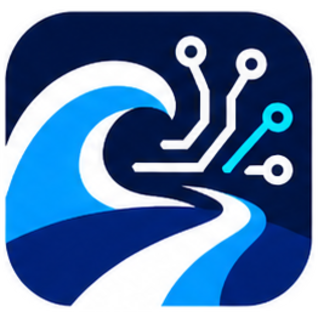

连接 OceanWay AI，并同步 Codex 图片能力
首次输入一次，之后打开软件可直接复用已保存的 Key。
Key 仅保存到本机 Codex 配置中，软件不会在界面回显完整内容。
用于内置图片工具不可用时的 CLI 备用路径。
切换 provider 后看不到旧任务时再使用。
将恢复到首次使用本工具前的状态，并撤销 OceanWay provider、已保存的 OceanWay Key、图片备用配置及本工具记录的历史迁移。